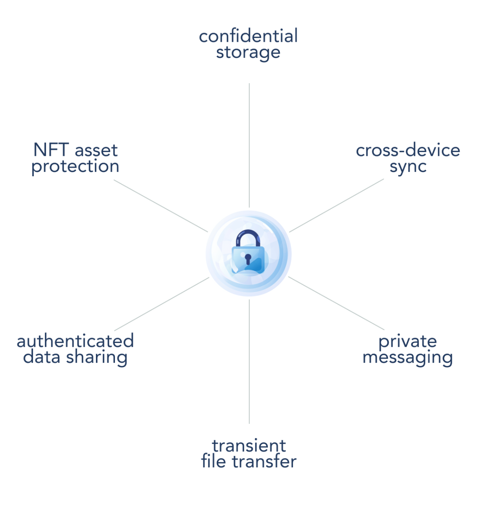
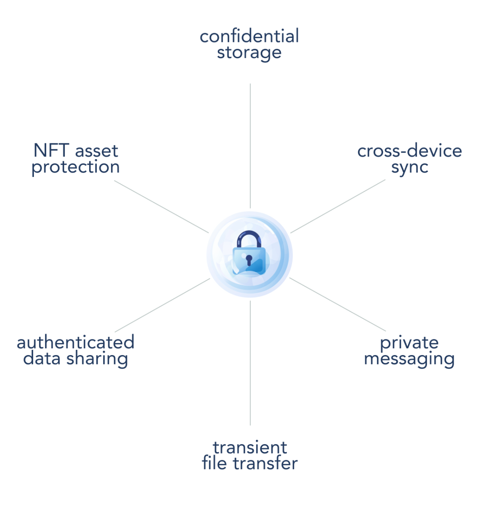
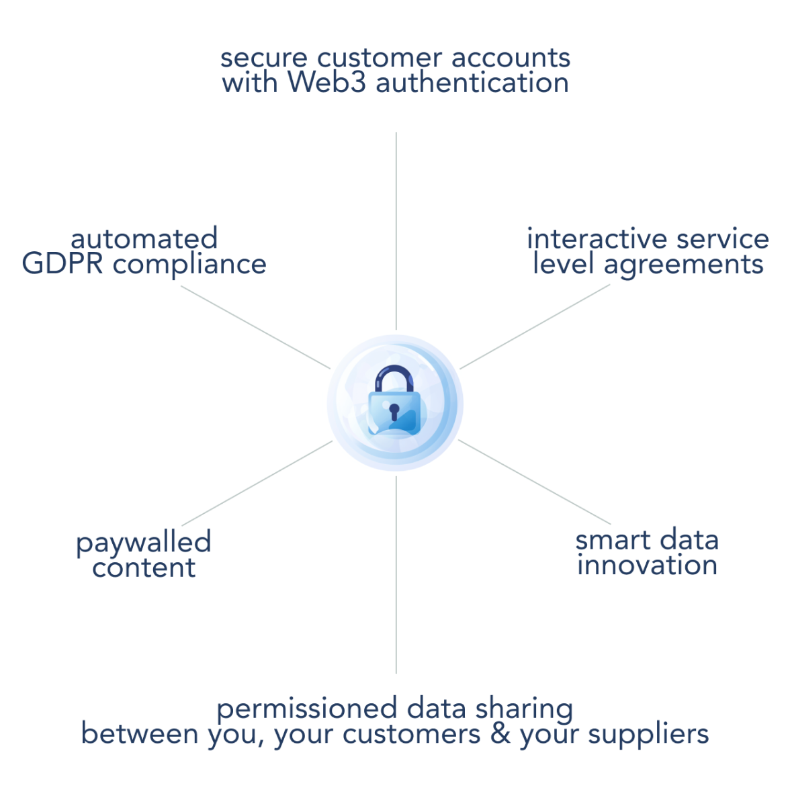
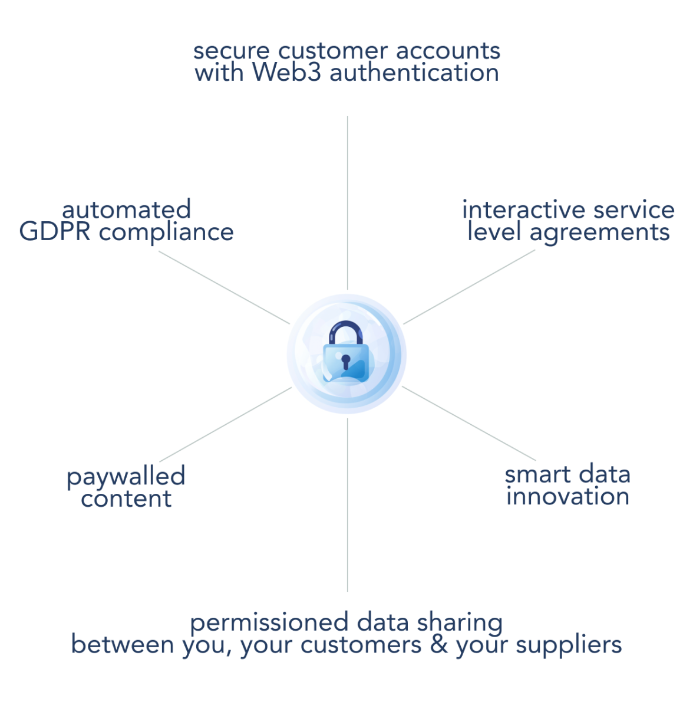

Bringing off-chain privacy to Web3
Bubble Protocol is a private off-chain storage layer for Web3


Why Build on Bubble Protocol?
Private Off-Chain Storage
Securely store and control access to sensitive data with Bubble Protocol's encrypted off-chain 'bubbles', giving you full control without compromising on-chain efficiency.
Privacy Innovation
Leverage the power of smart contracts for dynamic, transparent, and immutable control of private data, ensuring compliance and lifecycle management with on-chain SLAs.
High Performance
Enhance your Web3 applications with Web2-like performance using Bubble Protocol's hybrid approach, providing a high-speed, seamless user experience with real-time notifications.
Versatile Storage & Hosting
Embrace flexibility with Bubble Protocol, designed for versatility across data's spectrum — from transient data packets to expansive datasets. Its adaptability supports storage solutions ranging from cloud services and home servers to decentralised file systems and corporate data centres.
What is Bubble Protocol?
Bubble is an off-chain storage protocol that brings private data capabilities to Web3 applications. Its mission is to give users control over their digital footprint. It combines off-chain storage with on-chain access controls to offer a new standard for private storage and privacy innovation.
With its advanced privacy features and hybrid approach to Web3 innovation, Bubble Protocol brings unique capabilities to dApp developers and businesses.
With its advanced privacy features and hybrid approach to Web3 innovation, Bubble Protocol brings unique capabilities to dApp developers and businesses.
Decentralised Applications


Business


Why On-Chain Permissions?
Using an on-chain smart contract to specify permissions is a powerful way to control access and brings a number of benefits for innovation:
- Programmable Access Control: Customisable smart contracts define precise data access rules that can change over the lifetime of the bubble in response to events and state changes.
- Interactive: Ability to respond to transactions from authorised senders (EOAs or other smart contracts).
- Event-Responsive: Ability to trigger actions based on predefined events, such as time-based criteria or external oracle inputs.
- Authenticated Interactions: Guarantees that data exchanges are verified and secure.
- Transparent Operations: Ensures visibility of access rules and interactions for all stakeholders.
- Immutable Rules: Once deployed, the contract code cannot be altered, ensuring consistent enforcement.
- On-Chain SLAs: Establishes a blockchain-enforced Service Level Agreement for data handling.
- Compliance Adherence: Automates compliance with regulations like GDPR for data privacy and protection.
Comparison To Other Storage Protocols
| Feature/Technology | ||||
| Type | P2P Storage Network | IPFS + blockchain incentive layer | Blockchain-based decentralised storage network | Flexible: P2P storage network, cloud relay servers or private storage |
| Primary Uses | Web file sharing; dynamic content | Long term storage of large datasets | Permanent archiving | Permissioned sharing; private dapp storage; dynamic content; transient content |
| Decentralised? | Yes, unless pinned to one server only. | Yes | Yes | Decentralised or centralised; depends on the provider and client choice |
| Speed | Fast (depending on network) | Slow (1 hour) | Fast | Fast (dependent on provider) |
| Persistance | Requires pinning for persistance | Yes, guaranteed through storage contracts | Yes, permanent by design | Yes, until bubble is terminated or content deleted |
| Redundancy | Only when unpinned or if pinned to multiple servers | Only if specified through contract | Yes | Depends on the provider; client can deploy on multiple servers |
| Delete Content? | No | No | No | Yes |
| Update Content? | No | No | No | Yes |
| Economic Model | None inherent; relies on external pinning services | Token-based payment contracts | One-time payment | Token-based payment contracts |
| Data Integrity | Content-hash based addressing ensures integrity | Proof of Replication and Spacetime | Blockweave and hashing | Optional content-hash based addressing |